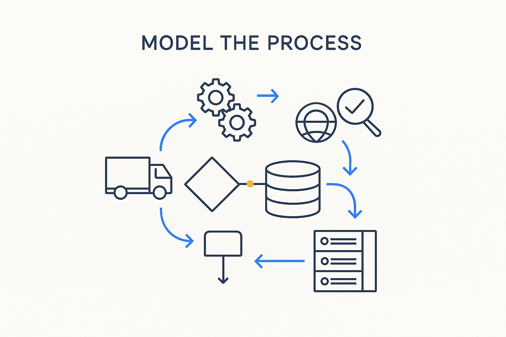

Model not just the data model and the transformations, but the whole process — delivery, integration, migration, quality checking, the backroom — and how the system changes over time.

> Model not just the data model and the transformations, but the whole process — delivery, integration, migration, quality checking, the backroom — and how the system changes over time.
Here is the distinction that matters more than ever. Data modeling has traditionally meant two things: the structure (the data model) and the transformations (how data moves and changes, described and explained through lineage). Both are essential and both stay. But they are not enough. We also have to model the whole process around them — the complex data delivery, the integration, the migration, the quality-checking — and the backroom that runs it all.
And crucially, we have to model how the system changes over time. A data landscape is never static: new sources appear, sources change, systems migrate, platforms shift, teams turn over. If the model only captures the current structure, it goes stale the moment the landscape moves — and it moves constantly. Modeling the process means the deliveries, contracts, calendars, quality checks and incidents are part of the model, and so is the history of change itself.
This is why Breakthrough Modeling is broader than data modeling: structure and transformation are the *what*, and the process is the *how it actually runs and evolves*. Model the process — delivery, integration, migration, quality, the backroom, the change over time — and the model finally describes the living system, not just a snapshot of its shape.
Where it lives: the delivery layer of Breakthrough Modeling — model the running system, not only its structure.